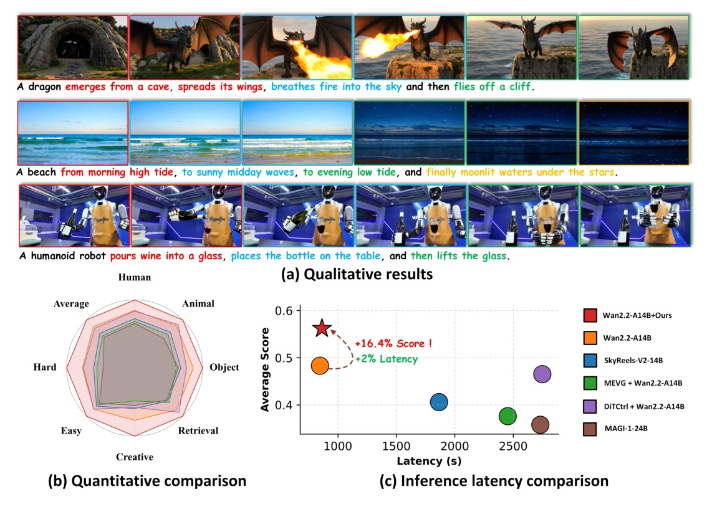
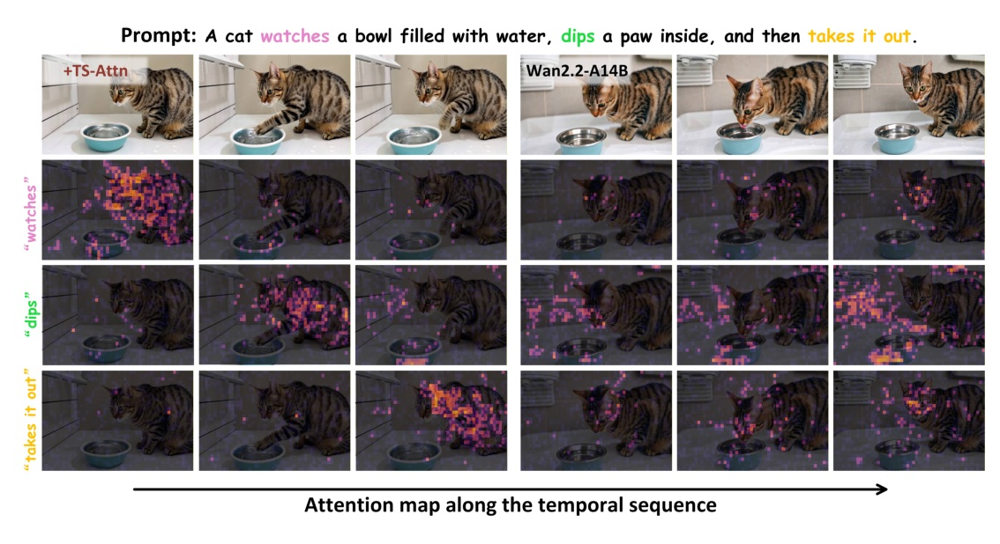
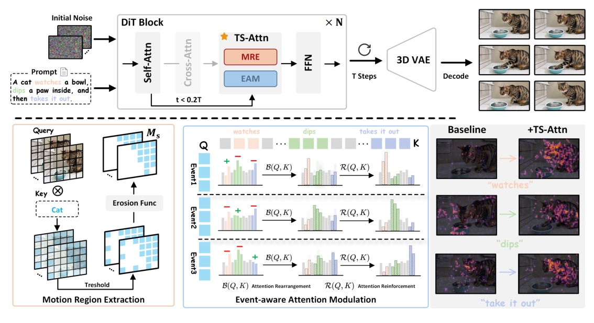
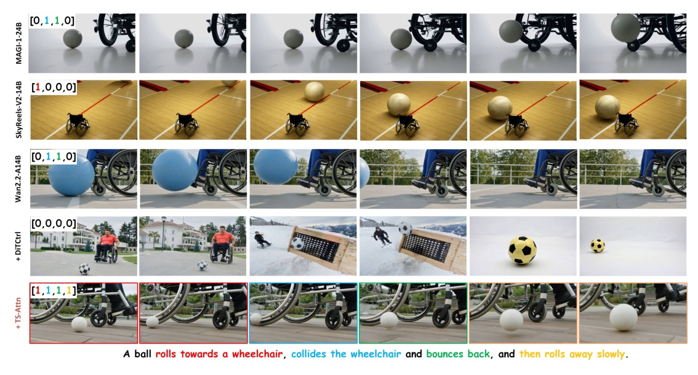
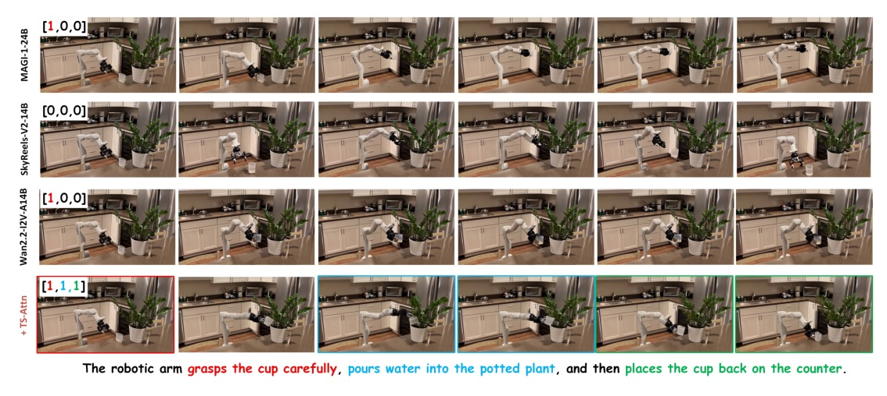
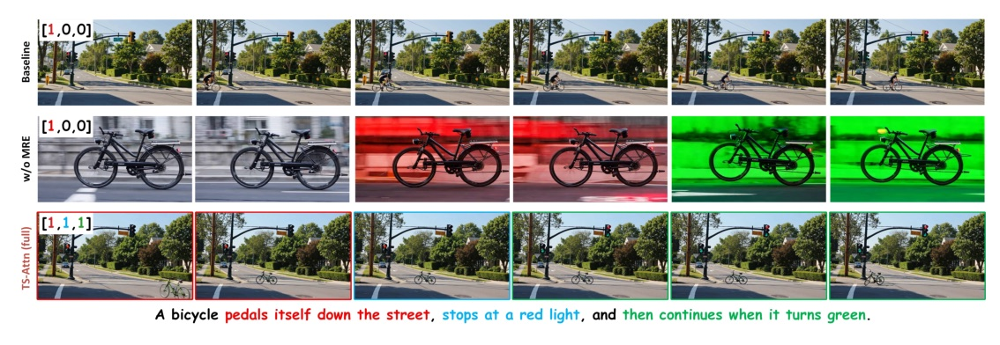

Temporal-wise Separable Attention for Multi-Event Video Generation

Full paper title: TS-Attn: Temporal-wise Separable Attention for Multi-Event Video Generation
讓 motion token 對準此刻對應的 event token；其餘事件仍留在全域 context，不用硬切掉。
MULTI-PROMPT / CLIP-BY-CLIP
ONE GLOBAL COMPLEX PROMPT


PROMPT
“A cat watches a fish, dips its paw, then takes it out.”
INTERVAL SOURCE
MATCHING EVENT
NONMATCHING EVENTS
主要增益來自 rearrangement：把 attention 的時間歸屬重分配。
Reinforcement 只在分布太平時，補上強度。
T2V
I2V EXTENSION
| Backbone | Base avg. | TS-Attn avg. | Delta |
|---|---|---|---|
| CogVideoX-5B | 16.4% | 25.8% | +9.4 |
| Wan2.1-1.3B | 29.1% | 37.6% | +8.5 |
| Wan2.1-14B | 37.6% | 50.2% | +12.6 |
| Wan2.2-A14B | 48.3% | 56.2% | +7.9 |
| Backbone | Base avg. | TS-Attn avg. | Delta |
|---|---|---|---|
| CogVideoX-I2V-5B | 19.6% | 28.3% | +8.7 |
| Wan2.1-I2V-14B | 37.0% | 42.6% | +5.6 |
| Wan2.2-I2V-A14B | 47.5% | 54.4% | +6.9 |
| Model / method | Latency (s) | Relative to Wan2.2 |
|---|---|---|
| Wan2.2-A14B | 846 | 1.00x |
| Wan2.2 + TS-Attn | 863 | 1.02x |
| Wan2.2 + MEVG | 2453 | 2.90x |
| Wan2.2 + DiTCtrl | 2749 | 3.25x |
| MAGI-1-24B | 2732 | 3.23x |
Table uses 480x832 videos on one A100; TS-Attn total includes an average 2.65 s GPT-4o-mini temporal-segmentation call.


| Wan2.2-A14B variant | Easy | Hard | Average |
|---|---|---|---|
| Baseline | 60.3% | 34.0% | 48.3% |
| + EAM | 66.2% | 39.8% | 51.9% |
| + EAM & MRE | 70.5% | 44.3% | 56.2% |

SUPPORTED CHOICES
PAPER’S INTERPRETATION
“TS-Attn first extracts and thresholds the cross-attention map associated with the event-performing entity to identify the motion-related regions.”
先定位執行事件主體所對應的 motion region，再決定在哪裡修改 attention。§1 p.2
“Attention rearrangement contributes more to performance improvement... attention reinforcement... serves more as a supporting component.”
重排是主要機制；強化是依分布狀態調節的輔助機制。Appendix D p.15
“TS-Attn only requires a rough temporal segmentation to effectively perform reasonable attention reallocation.”
時間切分可以粗，但 attention 的重新分配必須對。Appendix E p.16
Multi-event video generation does not necessarily need a new model or a new training run. TS-Attn changes the temporal ownership of attention where motion happens.